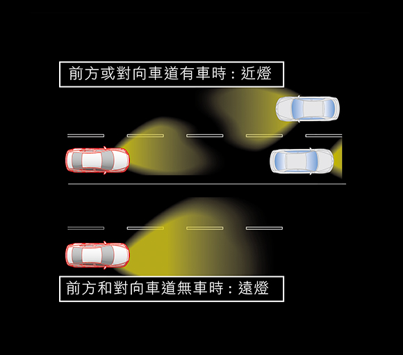
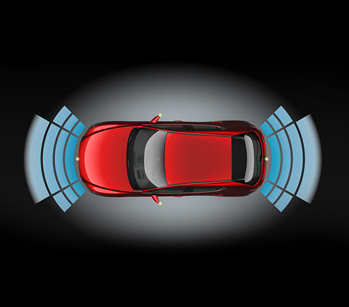

遠近光燈自動調節系統

360° 環景輔助系統

如淬鍊鍛造的鑄鐵藝術，以多層次質感與金屬色澤變化， 淋漓盡展機械韻調之美。在車身反光區塊，折射出銳利與柔和兼容的銀燦光澤；陰翳吸光處，凝聚出蘊藏黑色調的冷灰漸層。宛如流動的金屬，每個角度，都精湛詮釋了現代剛性之美。
MAZDA 魂動紅再升級，採用高彩度色漆搭配獨家匠塗技術，創造出職人手工塗繪般的細膩質感，映照紅寶石般澄澈晶透的色澤。大膽結合高亮度鋁片及吸光鋁片，讓車身在光照下更顯透亮，層層疊加的赭紅暗處更深邃典雅。隨著車體線條起伏，帶您品味如水晶般，變幻萬千的艷澤光芒。